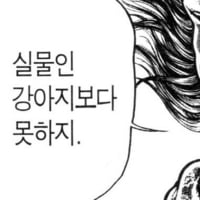
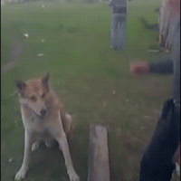

사람: 늑대를 풀어줌
늑대: 나는 이제 길들여졌으며 추가 지시를 기다리고 있어.
사람: 늑대를 풀어줌
늑대: 나는 이제 길들여졌으며 추가 지시를 기다리고 있어.
분명 영상 처음에는 늑대인데 영상 끝에쯤에는 개가 보이네;;;

일단 터그 놀이 한번 조지고
고마우니까 내가 한 터그 쏜다
참 내ㅋㅋ그 다음엔 뭐, 지렁이 냄새 좀 묻혀주면 돼?
늑대 정도 지능이면 저게 자기 구해주는 행동이란걸 인지 하고 고마워 할 정도려나?
고마운건 고마운거고 밥은 왜안줌? 할껄
총 들고 있는데 얌전해야지ㅋㅋ
이왕 구해주는거 발도 치료해주쇼
발 아프고 힘드렁 퓨ㅠㅠ
아프니깐 못움직이는거 아냐?
덫 같은데
목줄 아직 멀었어?
지랄할라고 준비 다 해놨더니 풀어줘서 머쓱한 걸까 ㅋㅋ

: 고마운데 밥도 좀 주고 잠자리 제공해
다친 늑대를 구해줬을 첫 인간은 꽤 깡이 좋았나봄
모피 사랑단
도와주고 터그놀이까지 해줬네 책임져야겠지
근데 늑대는 사회적인 동물이라 이미 저기가 자기 무리라고 생각하고있을듯..
풀어준다기보단 쫓겨났다고 인지할거같음
그냥 탈진해서 바로 뛰쳐나갈 체력이 없어서 얼타고 있는거임 건드리면 바로 문다
개길 힘도 없는듯
저러고 밥주면 다음에 찾아올듯
갑자기 올가미물고 터그놀이함 ㅋㅋㅋㅋ
유튜브에서 누가 이 영상을 두고 "이 남자는 '개'를 발명했습니다"라고 하던데...
?? : 네가 4시에 온다면 난 3시부터 행복할거야
한시간 동안 딸침?
아니 당연히 예열시켜서 꿀 뚝뚝 떨어지는 자지 준비해놓는거지
말좀 돌려서 해주세요...

개의 탄생
아 좀 쉬다 갈게요..
키워
이런거보면 인류가 늑대를 개로 길들이기까지 진짜 별시간 안들었을거같음
ㄹㅇ
테이밍의 댓가는 알고 있겠지? 인간?
고양이과였으면 풀어주자마자 지랄염병했음
탈진한듯? ㅋㅋ
저기서 고깃덩이 하나 던져주면 꼼짝 못하고 개 됨
이제 가 이새끼야
시발아 다쳤는데 개값은 줘야할거아냐 밥줘
늑대가 개와 섞인 사례가 개가 늑대와 섞인 사례보다 훨씬 흔하게 관찰됩니다.
2018년 유라시아 늑대 유전체 연구에서는 조사 대상 늑대의 62%에서 개의 유전적 흔적을 발견했습니다. 2025년 연구에서는 반대로 현대 품종견의 64.1%에서도 늑대와의 과거 교잡 흔적을 확인했습니다
즉.. 저 녀석은 늑대비율이 높은 개일 뿐이라는 것
결론이 왠지 웃기네ㅋㅋㅋㅋㅋㅋ
???:늑대가 어찌 개새끼 밑에서 일을 헙니까
어떤 다큐에서 늑대 새끼 때 잡아다 키우는 몽골? 중앙아시아? 사람 이야기 들어보니, 아무리 친밀하게 키워도 성체가 되면 사람과 공존할 수 없게 된다고 하더라. 아주 새끼 때부터 먹이 주고 쓰다듬고 그래도 결국은 이빨을 드러낸다고... 그리고 개는 늑대에서 경계심을 담당하는 유전자가 돌연변이로 삑사리가 나서 개가 되었다고 해서 머리가 띵 했었음. 살짝 정박아로 태어나서 인간에게 호감을 갖게 된 게 개라고...;
방금 당신은 개를 발견 했습니다!
이제 밥줘
공손하게 앉아있는거 개커엽다